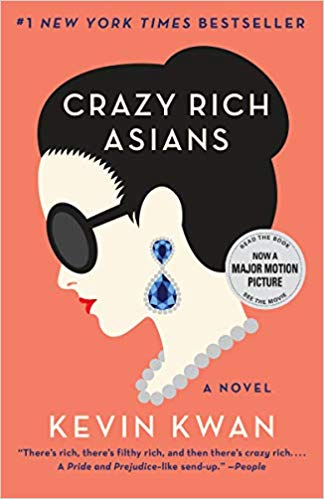

Crazy Rich Asians is the outrageously funny debut novel about three super-rich, pedigreed Chinese families and the gossip, backbiting, and scheming that occurs when the heir to one of the most massive fortunes in Asia brings home his ABC (American-born Chinese) girlfriend to the wedding of the season. When Rachel Chu agrees to spend the summer in Singapore with her boyfriend, Nicholas Young, she envisions a humble family home, long drives to explore the island, and quality time with the man she might one day marry. What she doesn't know is that Nick's family home happens to look like a palace, that she'll ride in more private planes than cars, and that with one of Asia's most eligible bachelors on her arm, Rachel might as well have a target on her back. Initiated into a world of dynastic splendor beyond imagination, Rachel meets Astrid, the It Girl of Singapore society; Eddie, whose family practically lives in the pages of the Hong Kong socialite magazines; and Eleanor, Nick's formidable mother, a woman who has very strong feelings about who her son should - and should not - marry. Uproarious, addictive, and filled with jaw-dropping opulence, Crazy Rich Asians is an insider's look at the Asian jetset; a perfect depiction of the clash between old money and new money; between Overseas Chinese and Mainland Chinese; and a fabulous novel about what it means to be young, in love, and gloriously, crazily rich. 'Crazy Rich Asians is an unputdownably funny, original, modern novel. An outrageous satire of the Asian squillionaire set, this book is like a Chinese Dallas meets Pride and Prejudice. The combination of gold homewares, couture, private jets, absurd social rules and snobbery is utterly hilarious. I actually couldn't put this book down to eat or to watch Downton Abbey.' - Plum Sykes, bestselling author of Bergdorf Blondes
